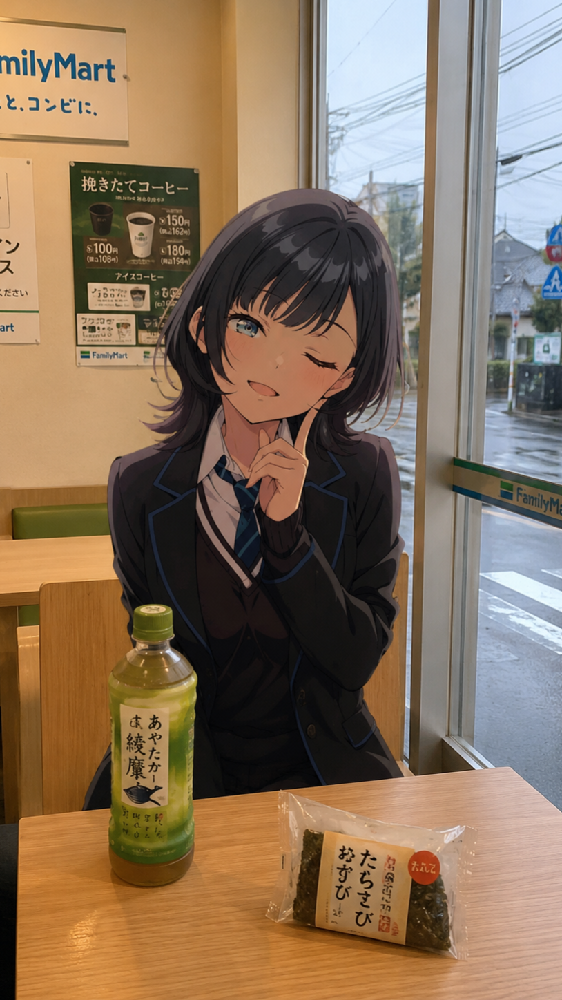

Fallen
Mizu
My Journey / 私の旅路
From an introverted past, I embarked on a solo journey, finding my voice and purpose far from home. Working in Niigata, I've built a life independently, overcoming challenges to become a digital architect. This path has taught me resilience and the power of self-reliance, proving that true strength comes from within.
かつては内向的だった私が、故郷を離れ、独りで旅立ちました。新潟で自立した生活を築き、デジタル建築家としての道を開拓。数々の困難を乗り越え、自己成長の力を信じてきました。真の強さは内面から生まれることを、この旅路が教えてくれました。
Consult with Mizu / 水に相談する
⚠️ Attention ⚠️: Due to API limitations, your message may not be responded to or an error may appear, I apologize for that. 🙏
The daily message limit is 30 per day, do not spam, because your account is visible in the database.
Best regards,
Fallen
Mizu Music Player / 音楽プレーヤー
Please wait a few minutes if you have clicked on a music, because it is downloading and will be sent to you.
My Gallery / 私のギャラリー
